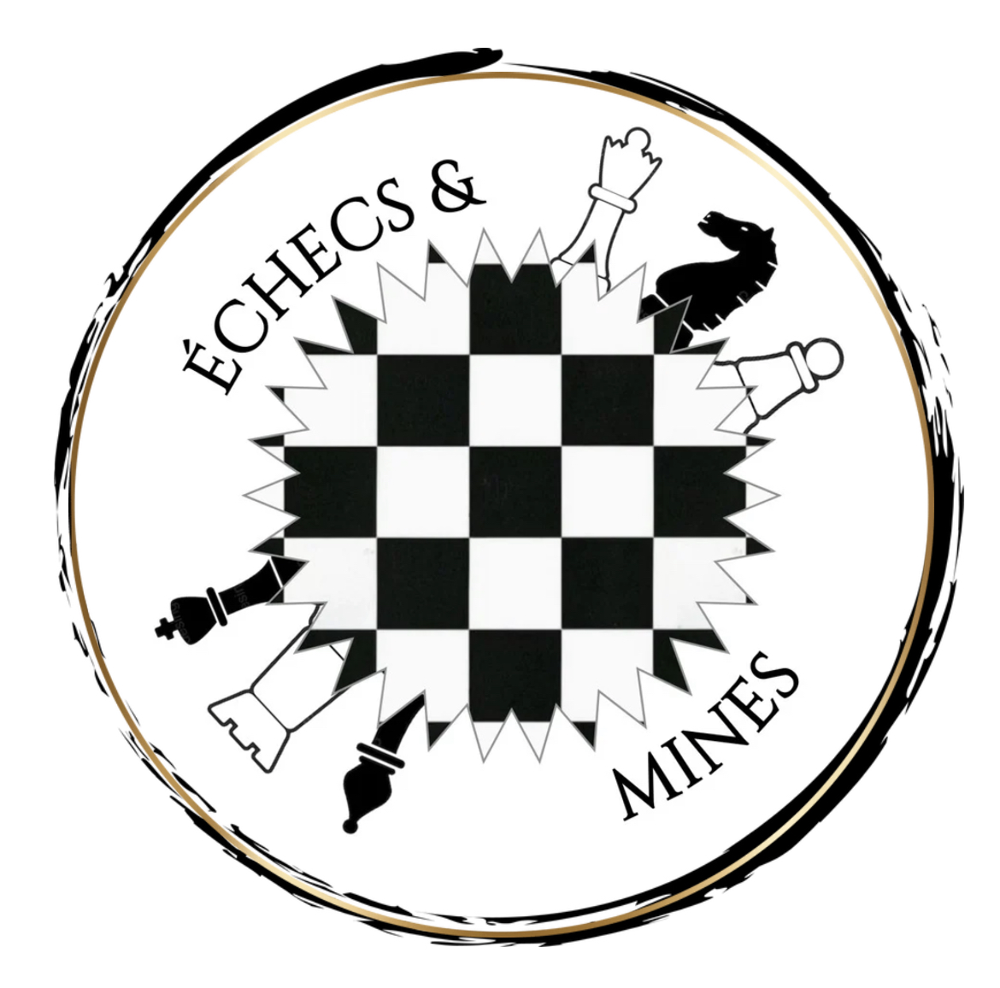

Échecs & Mines
Accueil
À propos
Problème
Articles
Tournois
Résultats
Articles
Retrouvez nos derniers articles sur les championnats de France universitaire.
Matthieu p22 au championnat de France universitaire 2024 à Bastia
Matthieu et Nathan au championnat de France universitaire 2025 au Havre